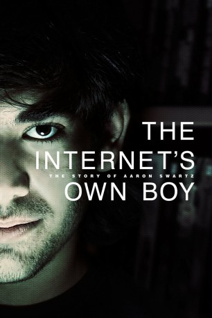

#525 The Internet's Own Boy - Die Geschichte des Aaron Swartz
Alternativ: The Internet's Own Boy: The Story of Aaron Swartz
 
 IMDB-Wertung: 8.1 / 10
IMDB-Wertung: 8.1 / 10  Metascore: 72
Metascore: 72 
The story of programming prodigy and information activist Aaron Swartz. From Swartz's help in the development of the basic internet protocol RSS to his co-founding of Reddit, his fingerprints are all over the internet. But it was Swartz's groundbreaking work in social justice and political organizing combined with his aggressive approach to information access that ensnared him in a two year legal nightmare. It was a battle that ended with the taking of his own life at the age of 26. Aaron's story touched a nerve with people far beyond the online communities in which he was a celebrity. This film is a personal story about what we lose when we are tone deaf about technology and its relationship to our civil liberties.
Jahr: 2014
Dauer: 105 Minuten
FSK:
Land: USA Studio: FilmBuffTonspuren:
Untertitel:
Auflösung: 720p (1280x720) Größe: 1310 MB
Genre: Krimi, Dokumentation, Biographie
Regisseur: Brian Knappenberger
Drehbuch: Brian Knappenberger
Soundtrack: John Dragonetti
Darsteller:
- Christopher Soghoian als Himself
- Bryan Stevenson als Himself
- Tim Berners-Lee als Himself
- Cindy Cohn als Herself
- Gabriella Coleman als Herself
- Cory Doctorow als Himself
- Peter Eckersley als Himself
- Brewster Kahle als Himself
- Lawrence Lessig als Himself
- Zoe Lofgren als Herself
- Carl Malamud als Himself
- Quinn Norton als Herself
- Tim O'Reilly als Himself
- Elliot Peters als Himself
- Alec Resnick als Himself
- David Segal als Himself
- Stephen Shultze als Himself
- David Sirota als Himself
- Taren Stinebrickner-Kauffman als Herself
- Matt Stoller als Himself
- Aaron Swartz als Himself , archive footage
- Ben Swartz als Himself
- Noah Swartz als Himself
- Robert Swartz als Himself
- Susan Swartz als Herself
- Trevor Timm als Himself
- Ben Wikler als Himself
- Ron Wyden als Himself
Datei: X:\Dokumentationen\Internet+Science\Internet's Own Boy - Die Geschichte des Aaron Swartz, The (2014, FSK, 1280x720).mkv seit 03.03.2015
Festplatte: HD Serien(SU-Z)+Dokus+Musik
 Es gibt insgesamt 25 Filme in der Gruppe 'Dokumentationen\Internet+Science'
Es gibt insgesamt 25 Filme in der Gruppe 'Dokumentationen\Internet+Science'